Introduction
Understanding the patterns and trends in hotel reviews can provide valuable insights into customer preferences, satisfaction levels, and the overall performance of hotels. In this analysis, we explore various aspects of hotel reviews, including review frequency by date, the influence of reviewer nationality, review scores, and sentiments. Let's delve into the findings and interpret the results from our comprehensive analysis.
Dataset Summary
| Column Name | Description | Data Type |
|---|---|---|
| Hotel_Name | Name of the hotel where the review was given | String |
| Reviewer_Nationality | Nationality of the reviewer | String |
| Review_Date | Date when the review was submitted | Date |
| Reviewer_Score | Score given by the reviewer (out of 10) | Float |
| Positive_Review | Positive comments provided by the reviewer | String |
| Negative_Review | Negative comments provided by the reviewer | String |
| Additional_Number_of_Scoring | Number of additional scores provided by the reviewer | Integer |
| Average_Score | Average score of the hotel at the time of the review | Float |
| Total_Number_of_Reviews | Total number of reviews the hotel has received | Integer |
| Total_Number_of_Reviews_Reviewer_Has_Given | Total number of reviews the reviewer has given | Integer |
| Tags | Tags associated with the review indicating trip type (e.g., Leisure, Business) | String |
| Latitude | Latitude of the hotel location. | String |
| Longitude | Longitude of the hotel location. | String |
| Positive_Review_Sentiment | Sentiment score of the positive review (calculated during analysis) | Float |
| Negative_Review_Sentiment | Sentiment score of the negative review (calculated during analysis) | Float |
Data Preprocessing
Before conducting the analysis, we performed several preprocessing steps to prepare the data:
- Extracting City and Country: We used the geopy library to determine the city and country from the hotel's address based on latitude and longitude. The data was grouped by the hotel's latitude and longitude coordinates, and a separate file was created containing the latitude, longitude, city, and country information.
- Loading and Joining Data: When loading the main dataset, we joined it with the file containing city and country information to ensure each hotel review was associated with the correct location.
- Sentiment Analysis: We used the VADER sentiment analysis tool in Python to calculate sentiment scores for both positive and negative reviews. These sentiment scores were saved in the dataset to avoid recalculating them every time the data was loaded. The location information was also joined using the previously dumped file after loading the data.
- Date Columns: We added several date-related columns to the dataset, such as the day of the month, day of the week, and month, to facilitate time-based analysis.
- Tag Extraction: We extracted tags into five columns based on rule-based matching. The tags included 'leisure', 'solo', 'family', 'business', and 'couple' to categorize the type of trip associated with each review.
Review Frequency Analysis
Daily Review Frequency
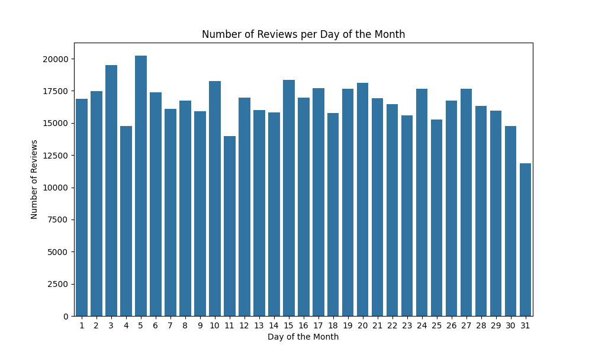The distribution is fairly uniform, indicating that the day of the month does not significantly influence the likelihood of submitting a review.
Weekly Review Frequency
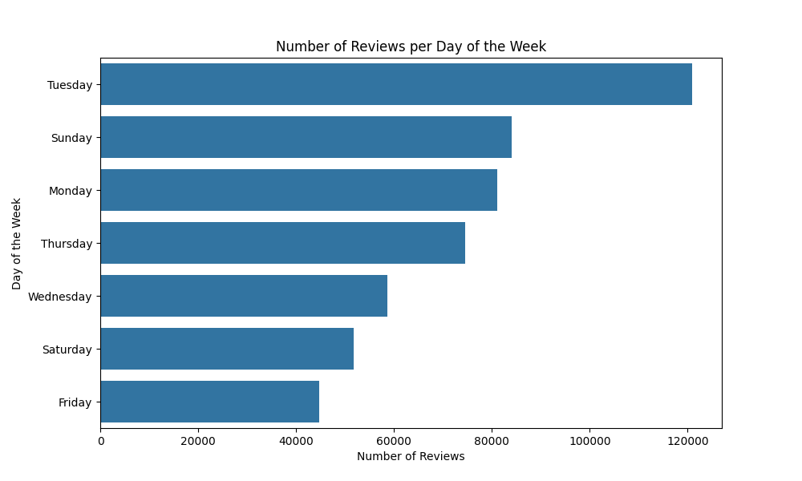The spike in reviews on Tuesdays could be attributed to business travelers reviewing their stays after the weekend.
#TODO analyse busienss travel here once to confirm
Monthly Review Frequency
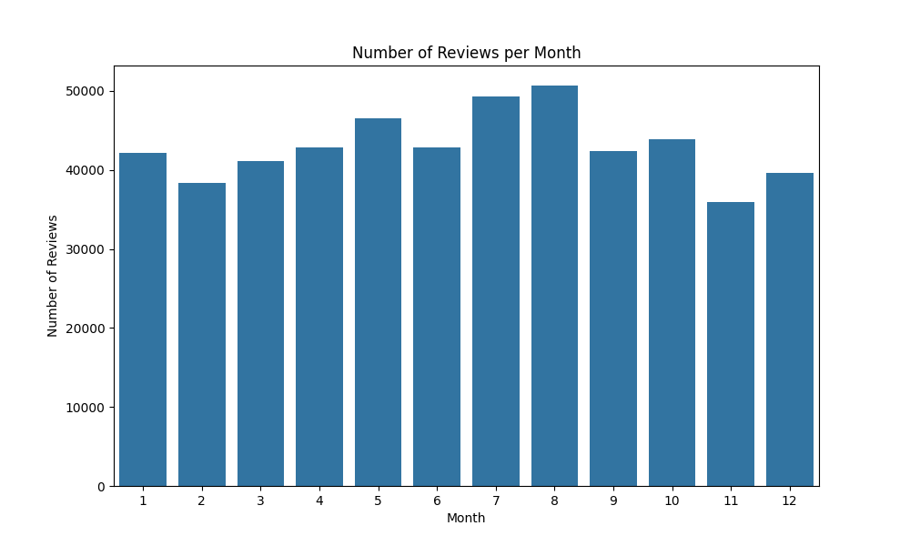The increase in reviews during the summer months suggests a higher volume of travel and hotel stays during this period, likely due to summer vacations.
Weekday vs. Weekend Review Frequency
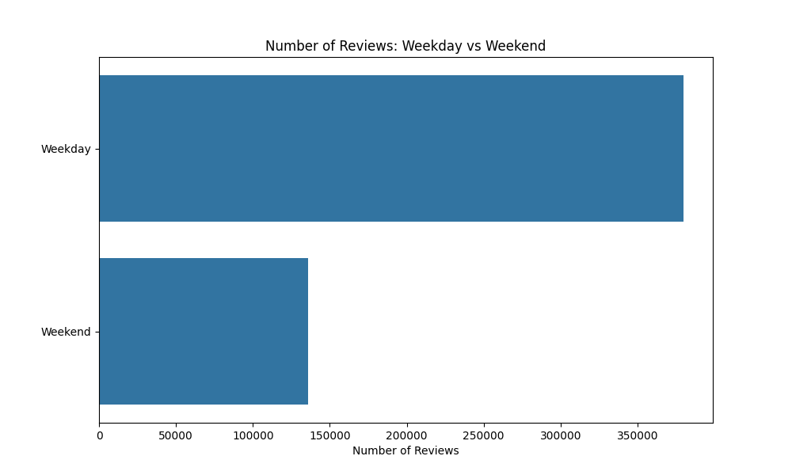This aligns with the earlier observation of higher reviews on Tuesdays, suggesting that travelers, especially business travelers, are more likely to write reviews during the week.
Reviewer Nationality Analysis
Number of Reviews by Nationality
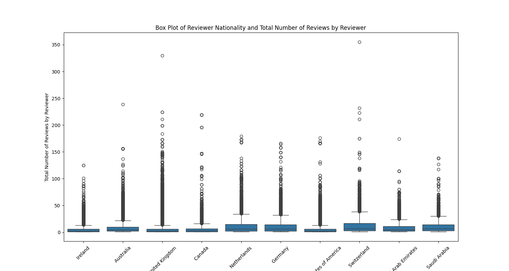The distribution shows that reviewers from the United Kingdom and Germany are among the most frequent contributors.
Review Scores by Nationality
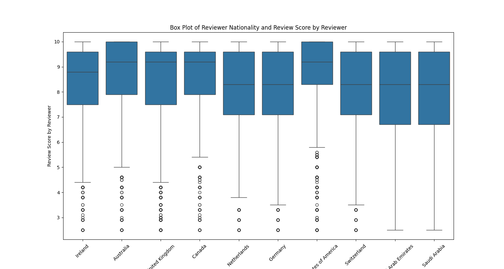There are noticeable differences in review scores among nationalities. For example, reviewers from Saudi Arabia tend to give higher scores, while those from the United States have a wider range of scores.
redo this para
Hotels By Number of Reviews
The chart below shows the top 10 hotels that have received the most number of reviews. This can provide insights into the popularity and guest engagement for these hotels.
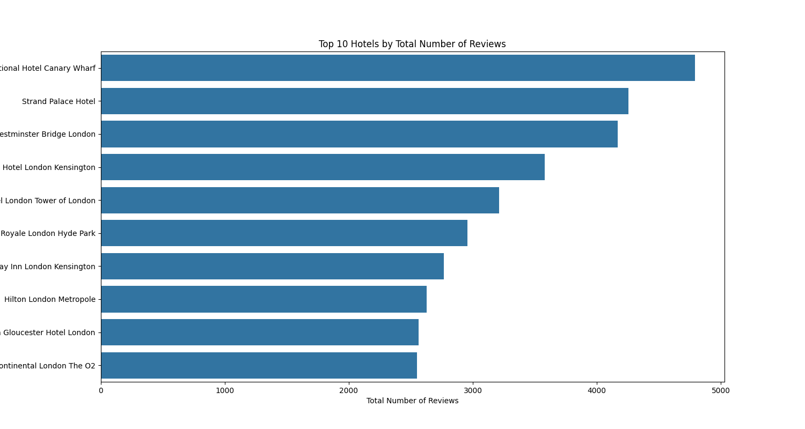Analysis Based on Hotel Location
Top Cities by Number of Reviews
The chart below shows the top cities by the total number of hotel reviews. This visualization helps us understand which cities receive the most reviews and are potentially the most popular travel destinations among the dataset.
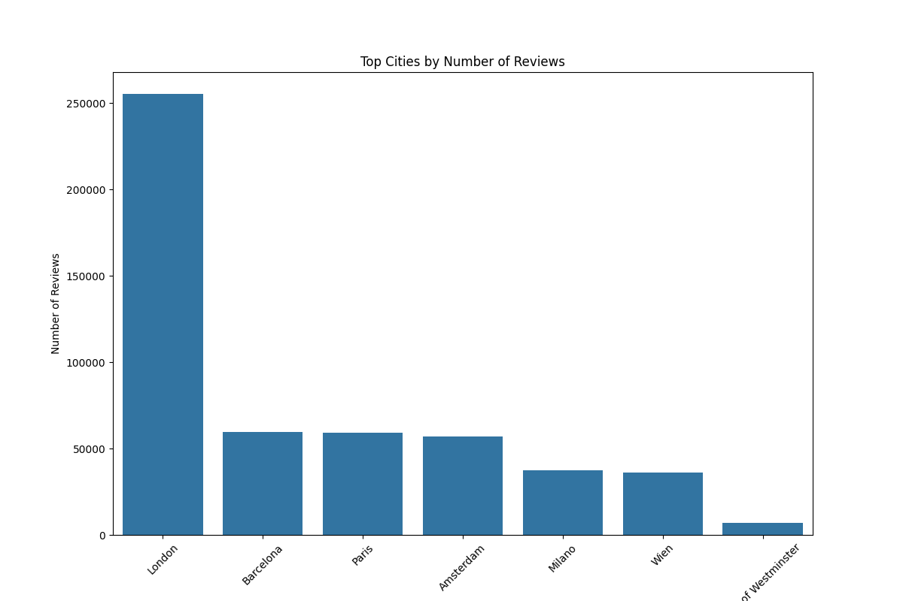As seen in the chart, London stands out with the highest number of reviews, significantly more than any other city. Other cities with high review counts include Barcelona, Paris, Amsterdam, and Milano. This distribution indicates a strong preference for these major European cities among travelers.
Reviews on cities based on Day of Week
The heatmap reveals that while most cities follow a similar pattern of peak reviews on Tuesdays and Sundays, the City of Westminster exhibits some deviations from this trend. Let's dive deeper into the comparative analysis for the City of Westminster against the general pattern observed in other cities.
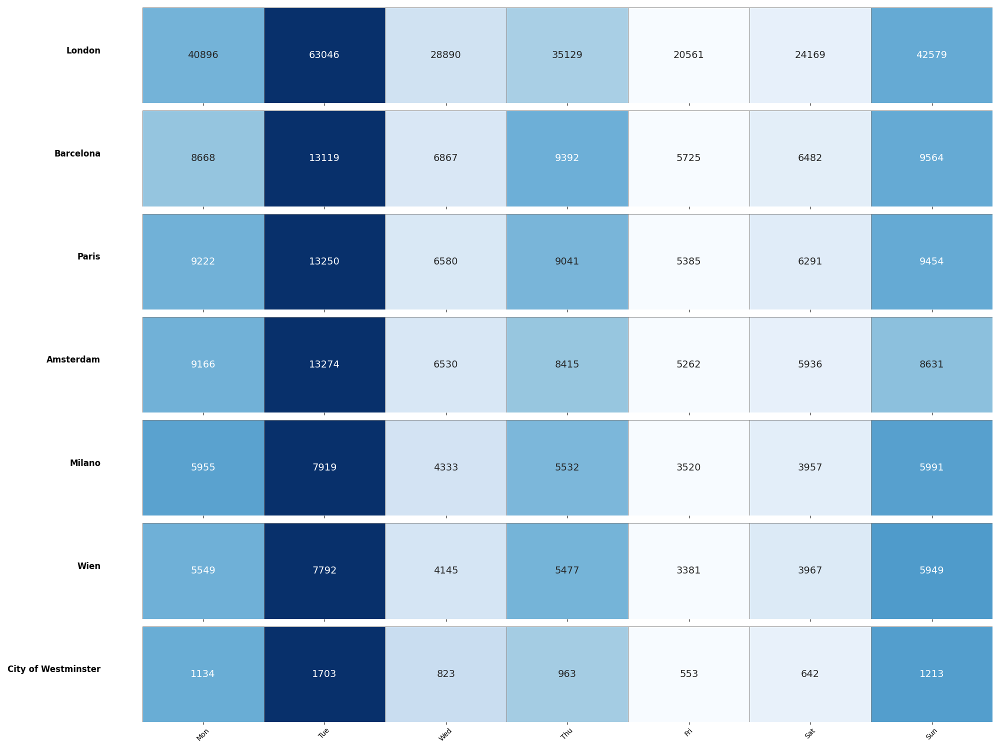- Less Pronounced Mid-week Peaks: Unlike other cities where mid-week days (Wednesday) also see a high number of reviews, Westminster shows a less pronounced peak, indicating a more balanced distribution throughout the week.
- Lower Monday Reviews: The drop on Mondays is more significant in Westminster compared to other cities, which might suggest different traveler behavior or review submission patterns.
- Consistent Review Activity: Westminster has a more consistent review activity across the week compared to the sharp peaks and troughs seen in other cities.
Reviews on cities based on Day of Month
The heatmap reveals that while most cities follow a similar pattern of peak reviews on Tuesdays and Sundays, the City of Westminster exhibits some deviations from this trend. Let's dive deeper into the comparative analysis for the City of Westminster against the general pattern observed in other cities.
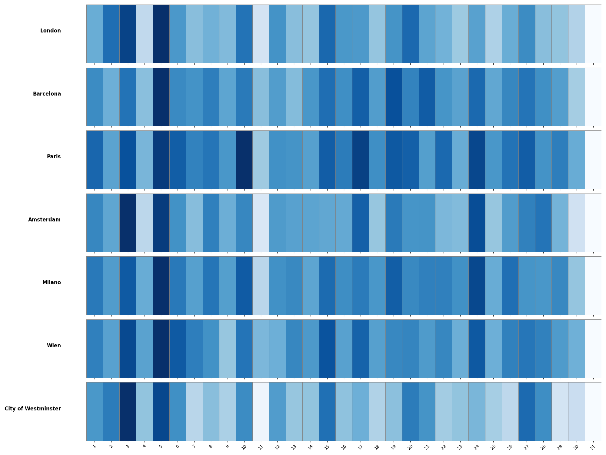- Steady Review Flow in Major Cities: Cities like London, Barcelona, Paris, and Amsterdam show a consistent pattern of review submissions throughout the month, indicating steady tourism and hotel stay rates.
- Variations in Westminster: The City of Westminster shows more noticeable variations with significant drops on specific days. This could be due to specific local events, holidays, or other factors influencing review submissions on those days.
- Middle of the Month Activity: Some cities like Paris and Wien show a slight increase in review counts around the middle of the month, which could be attributed to mid-month travel peaks or promotional events.
Average Ratings Over Time by City
The line graph below visualizes the average rating trends over time for various cities. Each subplot represents a different city, with the x-axis showing the year and month, and the y-axis representing the average rating.
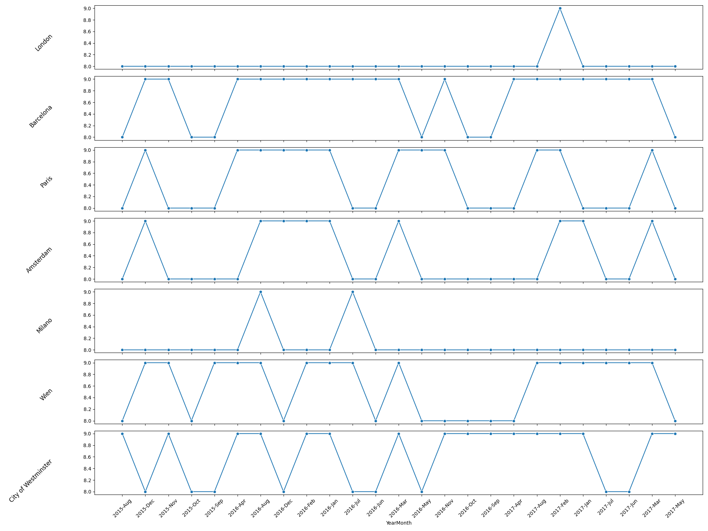- Consistent Cities: London and Milano show more consistent ratings over time, suggesting steady guest satisfaction without significant fluctuations.
- Variable Cities: Barcelona, Paris, Amsterdam, Wien, and City of Westminster exhibit more variability in their ratings, with distinct peaks and troughs. This indicates fluctuating guest satisfaction possibly due to seasonal factors, events, or changes in hotel services.
Hypothesis Testing
Hypothesis 1: Impact of Nationality on Review Scores
Hypothesis: Review scores vary significantly by reviewer nationality.
Test: Perform an ANOVA test to see if there are significant differences in Reviewer_Score between different Reviewer_Nationality.
Analysis: If the test shows significant differences, it indicates that review scores are influenced by the reviewer's nationality.
The violin plot below visualizes the distribution and density of review scores given by reviewers from different nationalities. Each "violin" represents a nationality, showing the density of review scores along the y-axis. The wider sections of the violin indicate a higher density of reviews at those score levels.
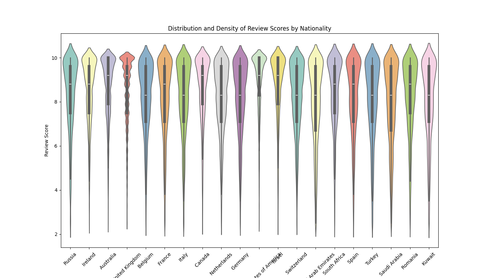Key Observations:
- General Distribution: Most nationalities show a high density of review scores around 8 to 9, indicating generally positive reviews across different nationalities. There are tails extending downwards towards lower scores, suggesting that while most reviews are positive, there are instances of lower ratings.
- Variations Between Nationalities:
- Saudi Arabia: Shows a very narrow distribution with a high density around the score of 9, indicating a tendency to give higher ratings.
- Russia: Displays a broader distribution with a noticeable density around both 8 and 9, but also significant density in lower scores.
- United States of America: Similar to Russia, shows a wide distribution with density around 8 and 9, as well as lower scores.
- Australia and United Kingdom: Both have a dense distribution around 8, but with tails indicating lower scores as well.
- Other Nationalities: Generally follow a similar pattern, with high densities around 8 to 9 and varying lengths of tails towards lower scores.
- Significant Differences: The ANOVA test result shows a statistic of 372.35093107636305 and a p-value of 0.0. Since the p-value is less than 0.05, it indicates that there are significant differences in review scores between different nationalities.
Hypothesis 2: Difference in Review Sentiments Between Cities
Hypothesis: There are significant differences in the sentiment of reviews between different cities.
Test: Use a Kruskal-Wallis test to compare Positive_Review_Sentiment and Negative_Review_Sentiment across different city groups.
Analysis: Significant results would suggest that the sentiments of reviews differ between cities.
The box plots below visualize the distribution of positive and negative review sentiments across different cities. The sentiments were analyzed to determine if there are significant differences in how guests from various cities perceive their hotel experiences.
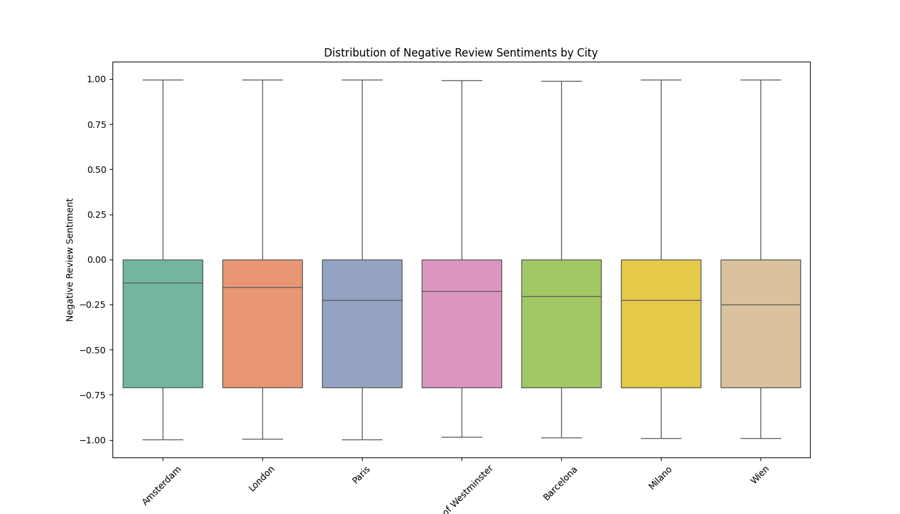 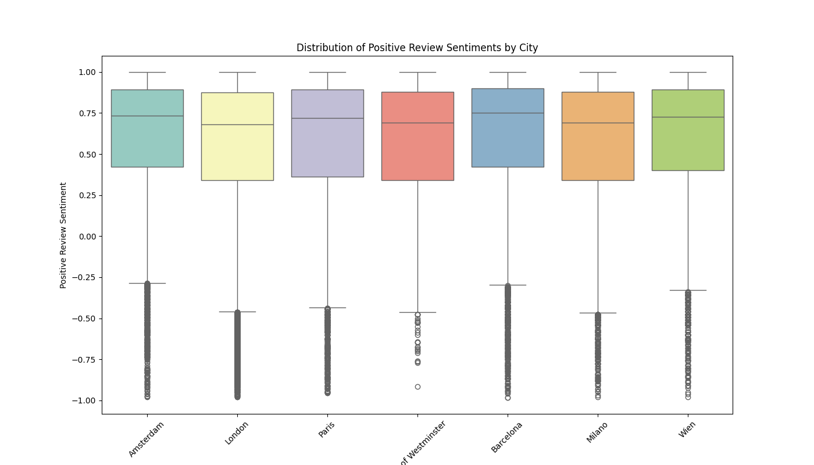Kruskal-Wallis test for Positive Review Sentiment: H-statistic = 1710.920660343248, p-value = 0.0
Kruskal-Wallis test for Negative Review Sentiment: H-statistic = 338.2590989679949, p-value = 5.1111007862571845e-70
Key Observations:
- Negative Review Sentiments:
- The median negative sentiment is around -0.25 for most cities, indicating a general tendency towards mildly negative reviews.
- The interquartile range (IQR) is similar across cities, suggesting a consistent spread in the negativity of reviews.
- Cities like Paris and City of Westminster show slightly more negative sentiments compared to others, with their median values closer to -0.3.
- Positive Review Sentiments:
- The median positive sentiment is around 0.75 for most cities, indicating generally positive reviews.
- The IQR shows a consistent spread in the positivity of reviews across cities.
- There are noticeable outliers, particularly for cities like Paris and City of Westminster, suggesting some extremely positive reviews as well as some negative ones within the positive sentiment category.
The box plots, combined with the Kruskal-Wallis test results, indicate significant differences in both positive and negative review sentiments across different cities. While the general trend shows positive sentiments being higher than negative sentiments, the distribution and spread vary between cities, suggesting different guest experiences and perceptions.
Hypothesis 3: Differences in Sentiment Based on Trip Type
Hypothesis: The sentiment of reviews differs based on the type of trip (e.g., leisure, business).
Test: Extract trip types from the Tags field and compare Positive_Review_Sentiment and Negative_Review_Sentiment for different trip types using t-tests or ANOVA.
Analysis: Significant differences would suggest that the nature of the trip affects the sentiment of the review.
The box plots below visualize the distribution of positive and negative review sentiments across different trip types. The sentiments were analyzed to determine if there are significant differences based on the nature of the trip.
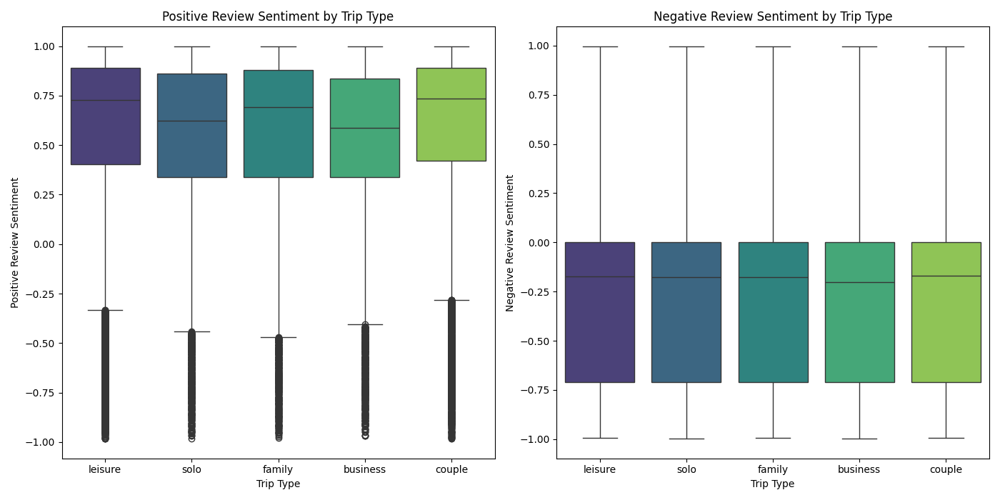ANOVA for Positive Review Sentiment by Trip Type: F-statistic = 1456.652, p-value = 0.000
ANOVA for Negative Review Sentiment by Trip Type: F-statistic = 14.152, p-value = 0.000
Key Observations:
- Positive Review Sentiments:
- The median positive sentiment is highest for trips categorized as "couple" and "family," indicating that these trip types tend to have more positive reviews.
- The sentiment for "leisure" trips is slightly lower compared to "couple" and "family," but still relatively high.
- "Solo" and "business" trips have similar positive sentiment distributions, both with slightly lower medians than "leisure," "couple," and "family."
- Negative Review Sentiments:
- The median negative sentiment is around -0.25 for all trip types, indicating a general tendency towards mildly negative reviews.
- There is little variation in negative sentiment between different trip types, suggesting that negative experiences may be perceived similarly across different types of trips.
The box plots, combined with the ANOVA test results, indicate significant differences in positive review sentiments based on the type of trip, while negative sentiments show less variation. This suggests that the nature of the trip influences how positively guests review their experiences, with "couple" and "family" trips tending to have more positive sentiments.
Conclusion
Through this comprehensive analysis of hotel reviews, several key insights were uncovered regarding review patterns, sentiments, and influences based on various factors such as nationality, trip type, and city.
Key Findings:
- Review Frequency:
- Reviews are generally evenly distributed across the days of the month.
- Tuesdays and Sundays see a higher number of reviews, likely influenced by business travel patterns.
- Summer months experience a surge in review submissions, correlating with increased travel activity during vacation periods.
- Nationality Influence:
- There are significant differences in review scores based on the reviewer's nationality, with Saudi Arabian reviewers tending to give higher ratings, while reviewers from the United States exhibit a wider range of scores.
- City-Based Sentiments:
- Significant differences were observed in review sentiments across different cities, with cities like Paris and the City of Westminster showing slightly more negative sentiments.
- Positive sentiments were generally higher, but the distribution varied by city, suggesting different guest experiences and perceptions.
- Trip Type Influence:
- Trip type significantly affects review sentiments, with "couple" and "family" trips receiving higher positive sentiments compared to "solo" and "business" trips.
- Negative sentiments were more consistent across trip types, indicating similar perceptions of negative experiences regardless of the trip type.
Recommendations:
- Hoteliers should consider tailoring their services to meet the expectations of travelers from different nationalities, potentially offering personalized experiences to enhance satisfaction.
- Understanding the distinct needs and preferences of different trip types can help hotels cater to these segments more effectively, improving overall guest satisfaction.
- Monitoring review patterns by day and month can help hotels anticipate peak review times and manage their online reputation more proactively.
This analysis highlights the importance of considering various factors that influence guest reviews and sentiments. By leveraging these insights, hotels can enhance their service offerings, improve guest satisfaction, and maintain a positive online reputation.